Sampling edges of graphs¶
def sample_graph_edges(G,k='default',labels_matter=False,draw=False,tabulate=true,vertex_labels_=False,edge_labels_=False,vertex_size_=10,figsize_=2):
E=Set(G.edges())
V=G.vertices()
L=[]
for s in E.subsets():
if k=='default' or s.cardinality()==k:
H=Graph()
H.allow_multiple_edges(true)
H.add_edges( s )
edge_label_mset=[]
for e in H.edges():
H.delete_edge(e) # need to delete and add in order to
if labels_matter:
label=e[2][0];
H.add_edge(e[0],e[1],label) # change labels of multiedges
if label:
edge_label_mset.append(label)
else:
H.add_edge(e[0],e[1]) # None label
Hcl=H.canonical_label()
L.append((Hcl.copy(immutable=True),tuple(sorted(edge_label_mset))))
Luniq=list(Set(L))
if labels_matter: # then sort them before sorting by number of edges
labels = [ tup[1] for tup in Luniq ]
P = Permutation([labels.index(x)+1 for x in sorted(labels)])
Luniq=P.action(Luniq)
Lsorted=[]
for size in range(G.size()+1):
for i in range(len(Luniq)):
if size==(Luniq[i][0]).size(): # 0th element is graph, 1st is set of edge labels
Lsorted.append(Luniq[i])
Csorted=[]
Esorted=[]
for H in Lsorted:
c=L.count(H)
e=H[0].size()
Csorted.append(c)
if labels_matter and H[1]:
Esorted.append(H[1])
else:
Esorted.append(e)
if draw:
edge_labels_ = edge_labels_ or labels_matter
H[0].show(figsize=figsize_,vertex_labels=vertex_labels_,vertex_size=vertex_size_,\
edge_labels=edge_labels_,title='Size=%s, Count=%s' %(e,c))
#print(H[0].edges(),H[1])
if tabulate:
print('Isomorphism classes:')
print(table([Esorted, Csorted]))
return Esorted,Csorted
def add_multiedge(G,k=1,draw=false,vertex_labels_=false,edge_labels_=false,vertex_size_=10,figsize_=5):
G.allow_multiple_edges(true)
for e in G.edges():
if not G.edge_label(e[0],e[1]):
G.set_edge_label(e[0],e[1],0)
for i in range(1,k+1):
G.add_edge(e[0],e[1],i) # distinct labels
else:
orig_label=G.edge_label(e[0],e[1])
G.set_edge_label(e[0],e[1],(orig_label[0],0)) # edge label is tuple
for i in range(1,k+1):
G.add_edge(e[0],e[1],(orig_label[0],i)) # distinct labels
if draw:
G.show(figsize=figsize_,vertex_labels=vertex_labels_,vertex_size=vertex_size_,edge_labels=edge_labels_)
return G
vertex_labels_=false
vertex_size_=10
figsize_=2
nmin=3
nmax=4
for n in range(nmin,nmax+1):
Kn = graphs.CompleteGraph(n)
e = binomial(n,2)
Kn.show(figsize=figsize_,vertex_labels=vertex_labels_,vertex_size=vertex_size_,title='K%s has %s edges and %s subsets of edges' %(n,e,2^e))
e_choose_k=[]
for k in range(e+1):
e_choose_k.append(binomial(e,k))
print('Ways to choose:',table(e_choose_k),'\n')
sample_graph_edges(graphs.CompleteGraph(n),draw=false)
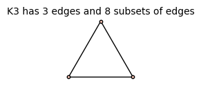
Ways to choose: 1 3 3 1
Isomorphism classes:
0 1 2 3
1 3 3 1
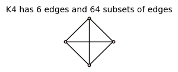
Ways to choose: 1 6 15 20 15 6 1
Isomorphism classes:
0 1 2 2 3 3 3 4 4 5 6
1 6 12 3 4 12 4 3 12 6 1
sample_graph_edges(graphs.CompleteGraph(3),draw=true);

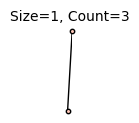
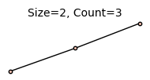
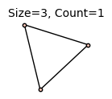
Isomorphism classes:
0 1 2 3
1 3 3 1
sample_graph_edges(graphs.CompleteGraph(4),draw=true);

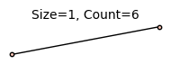
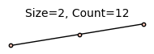
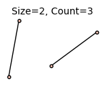
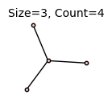
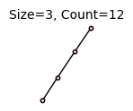
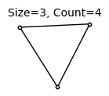
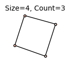
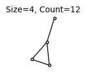
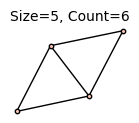
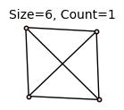
Isomorphism classes:
0 1 2 2 3 3 3 4 4 5 6
1 6 12 3 4 12 4 3 12 6 1
sample_graph_edges(graphs.CompleteGraph(5));
Isomorphism classes:
0 1 2 2 3 3 3 3 4 4 4 4 4 4 5 5 5 5 5 5 6 6 6 6 6 6 7 7 7 7 8 8 9 10
1 10 30 15 20 60 10 30 60 60 15 60 5 10 60 30 60 30 12 60 60 60 60 5 15 10 60 30 10 20 30 15 10 1
G=graphs.CompleteGraph(3)
G=add_multiedge(G,2,draw=true)
G.edges()
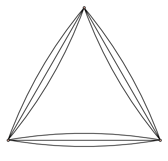
[(0, 1, (None, 0)), (0, 1, (None, 1)), (0, 1, (None, 2)), (0, 2, (None, 0)), (0, 2, (None, 1)), (0, 2, (None, 2)), (1, 2, (None, 0)), (1, 2, (None, 1)), (1, 2, (None, 2))]
sample_graph_edges(G,draw=true);
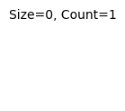
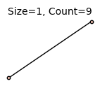
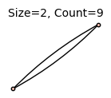
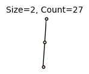
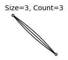
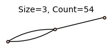
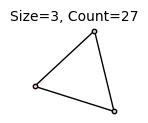
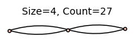
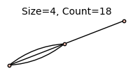
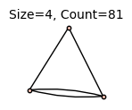
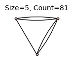
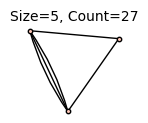
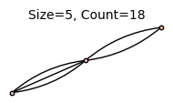
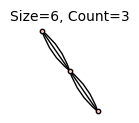
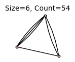
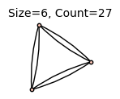
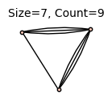
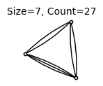
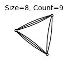
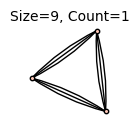
Isomorphism classes:
0 1 2 2 3 3 3 4 4 4 5 5 5 6 6 6 7 7 8 9
1 9 9 27 3 54 27 27 18 81 81 27 18 3 54 27 9 27 9 1
G=graphs.CycleGraph(4)
G.set_edge_label(0,1,'a')
G.set_edge_label(1,2,'b')
G.set_edge_label(2,3,'c')
G.set_edge_label(0,3,'d')
G.show(figsize=2,edge_labels=true)
G=add_multiedge(G,1,draw=true,figsize_=2)
G.edges()
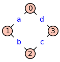
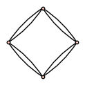
[(0, 1, ('a', 0)), (0, 1, ('a', 1)), (0, 3, ('d', 0)), (0, 3, ('d', 1)), (1, 2, ('b', 0)), (1, 2, ('b', 1)), (2, 3, ('c', 0)), (2, 3, ('c', 1))]
sample_graph_edges(G,2,labels_matter=true,draw=true);
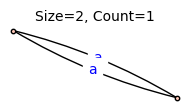
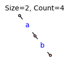
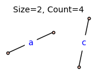
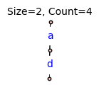
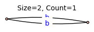
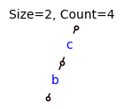
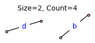
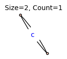
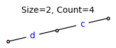
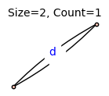
Isomorphism classes:
('a', 'a') ('a', 'b') ('a', 'c') ('a', 'd') ('b', 'b') ('b', 'c') ('b', 'd') ('c', 'c') ('c', 'd') ('d', 'd')
1 4 4 4 1 4 4 1 4 1
sample_graph_edges(G,3);
Isomorphism classes:
3 3 3
32 16 8
G=graphs.CycleGraph(4)
G.show(figsize=2)
G=add_multiedge(G,1,draw=true,figsize_=2)
G.edges()
sample_graph_edges(G,2,draw=true);
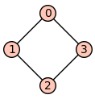

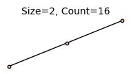
Isomorphism classes:
2 2 2
16 4 8
sample_graph_edges(G,draw=true);

Isomorphism classes:
0 1 2 2 2 3 3 3 4 4 4 4 4 5 5 5 6 6 6 7 8
1 8 4 8 16 8 16 32 16 4 16 2 32 32 16 8 16 8 4 8 1
G=graphs.CycleGraph(3)
G.set_edge_label(0,1,'a')
G.set_edge_label(1,2,'b')
G.set_edge_label(0,2,'c')
G.add_edge(2,3,'d')
G.show(figsize=2,edge_labels=true)
G=add_multiedge(G,2,draw=true,figsize_=2)
sample_graph_edges(G,3,labels_matter=true,draw=true);
Isomorphism classes:
('a', 'a', 'a') ('a', 'a', 'b') ('a', 'a', 'c') ('a', 'a', 'd') ('a', 'b', 'b') ('a', 'b', 'c') ('a', 'b', 'd') ('a', 'c', 'c') ('a', 'c', 'd') ('a', 'd', 'd') ('b', 'b', 'b') ('b', 'b', 'c') ('b', 'b', 'd') ('b', 'c', 'c') ('b', 'c', 'd') ('b', 'd', 'd') ('c', 'c', 'c') ('c', 'c', 'd') ('c', 'd', 'd') ('d', 'd', 'd')
1 9 9 9 9 27 27 9 27 9 1 9 9 9 27 9 1 9 9 1